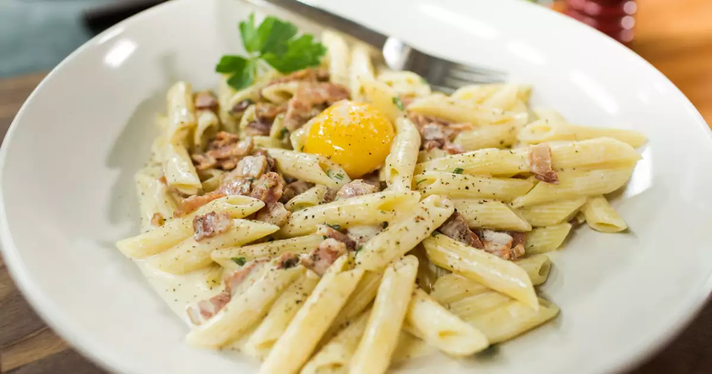

Penne Carbonara

Description
Penne Carbonara is creamy, cheesy pasta perfection, with crispy pancetta, rich egg yolks, and a hint of pepper.
Simple, indulgent, and irresistibly satisfying!
Ingredients : 4 Servings
- 400g penne pasta
- 150g pancetta (or guanciale), diced
- 3 large eggs
- 100g grated Parmesan or Pecorino Romano
- 2 cloves garlic (optional)
- Salt and freshly ground black pepper
Steps
- Boil the penne in salted water until al dente. Reserve some pasta water and drain.
- In a pan, cook the diced pancetta (or guanciale) until crispy. Optionally, add garlic for extra flavor, then remove.
- Beat the eggs in a bowl, add the grated Parmesan, and season with black pepper.
- Add the hot pasta to the pancetta pan, then remove from heat. Mix in the egg and cheese mixture, stirring quickly to create a creamy sauce (add pasta water if needed).
- Garnish with more Parmesan, pepper, and parsley (optional). Enjoy!